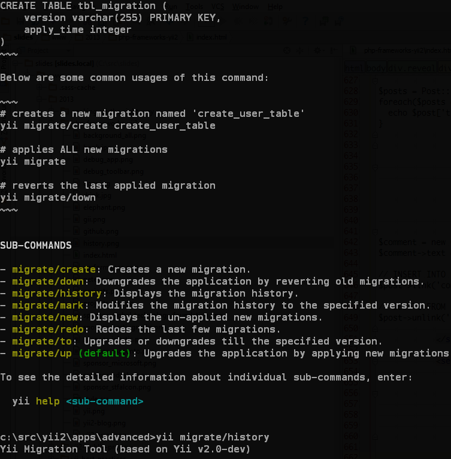
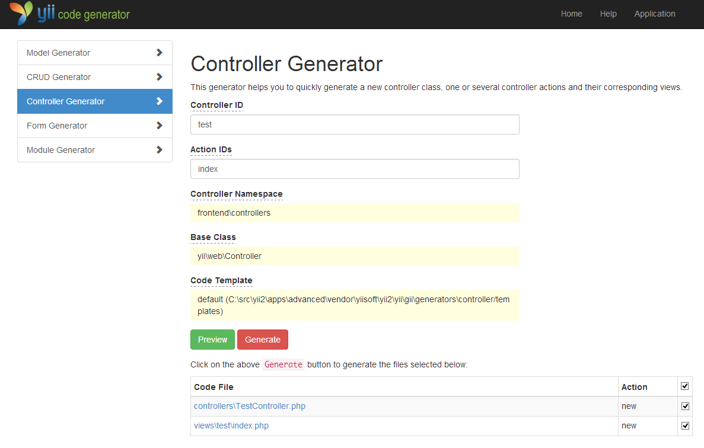

PHP, фреймворки, Yii2


PHP замечателен!
- Отличный выбор для веб разработки.
- Намного живее остальных (81%!).
- С хорошим фреймворком приятен.
PHP стремится к простоте и улучшается
- Производительность.
- Синтаксис.
- API хеширования паролей.
- Генераторы.
- Встроенный вебсервер.
- И многое другое...
И это прекрасно!
Хотя есть и «нехорошести»
- Скандалы, интриги, расследования.
- Часть инфраструктуры устарела.
- Не такая большая команда, как кажется.
Помогайте PHP стать лучше
А что фреймворки?
Сначала о хорошем
- Github для хорошего PHP-кода.
- PSR-0 и Composer (спасибо php-fig).
- Есть несколько стабильных, поддерживаемых и обратно совместимых фреймворков.

А теперь о не очень хорошем…
Переусложнение
- ZF 2 и Symfony 2 черезчур гибкие и сложные.
- Ещё более наворочены, чем были ZF1 и Symfony 1.
- Многие считают, что это единственный правильный путь.
Все проблемы программирования можно решить дополнительным слоем абстракции… кроме проблемы избыточной абстракции
David Wheeler
Зачем делать сложно, если можно делать просто?
Сделать просто сложнее, чем сделать сложно
Чем оправдывается сложность?
- Паттерны знают все. Когда их видно в интерфейсе, всем всё понятно.
- Легче тестировать.
- А вдруг кто-то придумает поменять одну БД на другую, а вдруг надо поменять один основной компонент на другой? А вдруг что-то пойдёт не так...
Чем это оборачивается
- Непонимание, паттернизм. Говорят как реализовано, но не для чего.
- Иногда легче тестировать, но заметно сложнее писать код, отлаживать и изучать.
- Куча слоёв. В тестах можно извернуться раз, а с API работать постоянно.
- Плата за гибкость — сложность. Сверхгибкость не нужна.
- Невозможно отдать рутину менее опытным разработчикам не потратив много времени на обучение.
SF2 и ZF2 — зло?
Нет. Просто другая ниша.
SF2 и ZF2 — не только сложность
- Стабильный API.
- Хорошо оттестированный код.
- Обратно-совместимые регулярные релизы.
- Гарантия поддержки на последующие N лет.
- Хорошая документация.
- Коммерческая поддержка, тренинги (этого у Yii пока нет).
- …?
И что делать?
Практичные фреймворки
- Без лишних сложностей.
- Проще изучить.
- Меньше магии.
- Меньше слоёв.
- Меньше конфигурации.
- Простой и удобный API.

практичный фреймворк
Мифы о фреймворках
- Переизобрёл колесо = плохой.
- Контейнер DI и клёвые паттерны = хороший.
- Сделали фичу первыми = лучше остальных.
- Слабо связанный = всегда лучше.
- Нет фичи X = плохой.
Действительно важно
- Легко изучать.
- Легко отлаживать и исправлять ошибки.
- Не мешает работать и использовать сторонний код.
- Дружелюбное активное сообщество.
- Обратно совместим и стабилен.
- Нет сложностей при попытках настроить и расширить.
- Фреймворк должен нравиться ;)
 Prado, с 2004 → Yii 1.0, 2008 → Yii 1.1, 2010 → ;)
Prado, с 2004 → Yii 1.0, 2008 → Yii 1.1, 2010 → ;)
Что такое Yii?
- PHP5 MVC.
- Сбалансированный, стабильный и поддерживаемый.
- DAO, AR, миграции.
- Кеширование.
- Формы.
- error handler, log.
- Генерация кода.
- I18n(CLDR).
- Виджеты.
- BSD.
- Хорошая документация и дружелюбное сообщество.
Документация очень важна
- Документируем сразу как пишем код.
- Основная документация переводится на 16 языков.
- Примеры.
- Книги.

Всё ещё остаётся самым быстрым PHP-фреймворком*
*Кроме PECL и микрофреймворков
Производительность

По версии Phalcon

setMyCoolFactoryDependencyInjectionContainer()
Yii — практичный фреймворк
А теперь про Yii2

- https://github.com/yiisoft/yii2/ нужен Composer
- Черновик документации
Насколько отличается от 1.1?
- Нет обратной совместимости с 1.1
- Хорошие идеи остались, но архитектура поменялась
Требования
- PHP 5.3.7+
- mb_string
- PDO
- intl
Почему не 5.4+?
- Можно использовать в приложении.
- Не требуется для работы фреймворка.
- Статистика показывает, что пока рано.
namespace
- Все классы в namespace.
- Нет префиксов вроде
C. - PSR-0.
- Умеренная вложенность.
Базовые классы
\yii\base\Object— геттеры и сеттеры, методinit, конфигурирование массивом,Object::className().\yii\base\Component extends Object— event, behavior.
class GoogleMap extends \yii\base\Object
{
public function __construct($param1, $param2, $config = array())
{
// ...
parent::__construct($config);
}
public function init()
{
// ...
parent::init();
}
}
Создаём объект
$object = \Yii::createObject(array(
'class' => '\app\components\GoogleMap',
'apiKey' => 'xyz',
'apiSecret' => 'cde',
), $param1, $param2);
События
$component->on($eventName, $handler);
$component->off($eventName, $handler);
$component->trigger($eventName, Event $eventObject = null);
Глобальные события:
// выкидываем
\Yii::$app->trigger($eventName);
// подписываемся
\Yii::$app->on($eventName, $handler);
Зачистка
- Классы расположены лучше.
- Лучше названия.
- Убили коллекции (SPL достаточно).
View
- Объект
View— данные, скрипты,render. $thisв шаблонах ссылается на него.$this->contextна контроллер или другого родителя.- Можно использовать в консоли.
- Темы (работают иначе).
- Renderer-ы (Smarty, Twig).
Виджеты
use \yii\widgets\Menu;
// ...
echo Menu::widget(array(
'items' => $items,
));
ActiveForm
use yii\widgets\ActiveForm;
<?php $form = ActiveForm::begin(); ?>
<?php echo $form->field($model, 'username')->textInput(); ?>
<?php echo $form->field($model, 'password')->passwordInput(); ?>
<div class="form-actions">
<?php echo Html::submitButton('Login'); ?>
</div>
<?php ActiveForm::end(); ?>
Asset bundle
- Скрипты описываются пакетами.
- Решает проблему зависимостей.
- Можно сжимать, сливать и преобразовывать консольной командой.
app\config\AppAsset::register($this);
Controller
return $this->render(...);- Консоль и web аналогичны.
- Слои для request и response.
- Фильтры теперь являются behavior-ами.
Model
- Описание валидаторов отделено от сценариев.
- Массовое присваивание не работает без валидации и сценариев.
Убили CFormModel, Model отлично работает с формами. Для форм всё проще.
AR, DAO, Query Builder, критерии
Один синтаксис для всего.
$query = new \yii\db\Query;
$query->select('id, name')
->from('tbl_user')
->orderBy('id DESC')
->limit(10);
$command = $query->createCommand();
echo $command->sql;
$rows = $command->queryAll();
$users = User::model()->find()
->orderBy('id DESC')
->limit(10)
->all();
В AR разделены модель и finder
$finder = Post::find()->where(array('a' => 10));
$finder2 = clone $finder;
$finder2->addWhere(array('b' => 1));
$model = $finder->one();
$model2 = $finder2->one();
// шорткаты
$post = Post::find(10); // pk = 10
$post = Post::find(array('a' => 10, 'b' => 1)); // where a = 10 and b = 1
Связи AR
- Только два типа has one, has many.
- Объявляются методами.
class User extends \yii\db\ActiveRecord
{
public function getPosts()
{
return $this->hasMany('Post', array('user_id' => 'id'));
}
public function getActivePosts()
{
return $this->hasMany('Post', array('user_id' => 'id'))
->where(array('status' => Post::STATUS_ACTIVE));
}
}
$posts = $user->getPosts()->limit(10)->all();
$postCount = $user->getPosts()->count();
AR не использует JOIN для связей
- Примерно то же по производительности.
- Легче кешировать.
- Можно работать с noSQL (пока Redis в отдельной ветке).
AR asArray
$posts = Post::find()->limit(10)->asArray()->all();
foreach($posts as $post) {
echo $post['title']."\n";
}
dirty attributes и link
При save() сохраняется только то, что поменялось.
Появился метод link для сохранения связанных записей и unlink для удаления.
$comment = new Comment();
$comment->text = 'Hello, Yii!';
// INSERT INTO post_comment ...
$post->link('comments', $comment);
// DELETE FROM post_comment ...
$post->unlink('comments', $comment);
Консоль
API как для web.
Хелперы
- Так и остались статичными классами.
- Расширяемы (LSB, namespace).
- ArrayHelper, StringHelper, Security, FileHelper...
$mergedConfig = ArrayHelper::merge($baseConfig, $specificConfig);
$posts = Post::model()->limit(10)->all();
$titles = ArrayHelper::getColumn('title');
$hash = Security::generatePasswordHash($password);
// ...пишем хеш в базу...
// при логине читаем хеш из базы
if (Security::verifyPassword($password, $hash) {
// всё нормально
} else {
// плохой пароль
}
Ошибки
- Все ошибки конвертируются в исключения.
- Ловит fatal-ы и логирует их.
- Новый шаблон.
Отладчик

Отладчик

Генератор кода
Шаблоны приложений
- basic
- advanced
- свои
i18n на intl
- https://github.com/yiisoft/yii2/pull/917
- Было: i18n → своя реализация → CLDR
- Стало: i81n → (intl + ICU + CLDR)
echo \Yii::t('app', 'There {n, plural, =0{are no cats} =1{is one cat} other{are # cats}}!', array(
'n' => 13,
));
// Здесь {n, plural, =0{котов нет} =1{есть один кот} one{# кот} few{# кота} many{# котов} other{# кота}}!
echo \Yii::t('app', '{n,number} is spelled as {n, spellout}', array(
'n' => 42,
));
Документация
- API документируется сразу
- Code style (почти PSR-1 и PSR-2)
- Larry Ullman выпустит книгу
- Гайд в черновом варианте
Производительность
- Быстрее грузятся классы за счёт PSR-0.
- Меньше классов.
- Кушает меньше памяти.
- Новый AR быстрее и также менее требователен к памяти.
- asArray

Composer
- Либо полностью, либо никак...
- Ядро-компоненты
- Репозиторий расширений
- Главный репозиторий со всем кодом.
- Отдельные «чистые» read-only subtree-репозитории для пакетов.
- ZIP для тех, у кого проблемы с консолью.
Рекомендуемый способ работы с Yii2:
curl -s http://getcomposer.org/installer | php
php composer.phar create-project --stability=dev yiisoft/yii2-app-basic .
Планы и доделки
- noSQL для AR (Redis)
- gridview (начат)
- API doc generator
- Документация (черновик есть)
- Багфиксы
Темп
- Сообщество было гиперактивно на тему пулл-реквестов, сейчас небольшой спад (основное готово?)
- 431 форк, 1248 фолловеров (1327/3100 у 1.1).
- Много работы :(
Не используйте в production! ;)
1.1 стабилен и поддерживается минимум до 2016
Попробовать 100% стоит
Вопросы?
- http://slides.rmcreative.ru/2013/php-frameworks-yii2/
- yiiframework.ru
- yiiframework.com
- ru.yiicookbook.org
- rmcreative.ru